Settings Flows
Settings flows for the 2.0 MVP release — update & verify phone, email, and address, designed with user experience at the core.
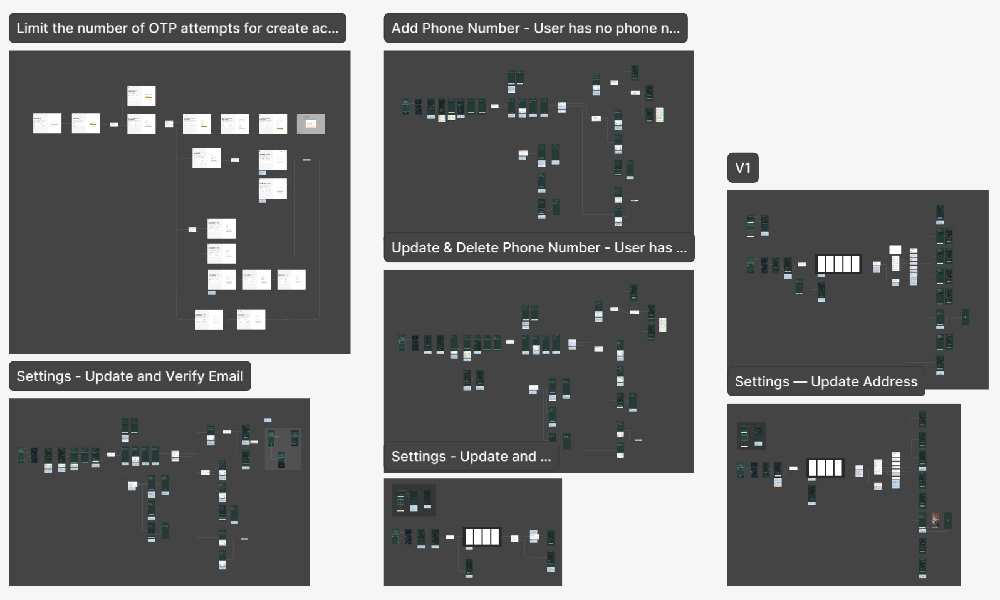
Settings — Update and Verify Email
Overview
RockWallet 2.0 required a self-serve email update and verification flow within Account Settings. Working closely with the PM and following the PRD, the goal was to replace an existing operational workaround with a secure, native experience — allowing users to independently update and verify their email address via OTP, without compromising account security or leaving them in an ambiguous state.
The Problem
RockWallet 1.0 was not designed with self-serve account management in mind — email updates were never a native feature.
- Users had no way to update their email address independently
- The only option was to contact support and wait up to 24 hours
- The process required a manual workaround — a secondary account and a deliberate verification failure
- This created friction at high-intent moments, particularly for returning users blocked from completing a transaction
Research
Since this was the first of the three Settings flows to be designed, the research phase was broader — establishing the foundation that the phone and address flows would later build on.
Competitor and fintech research focused on how other platforms handle self-serve email update and verification, with particular attention to clarity of state management, OTP patterns, and how errors are communicated without alarming users. The goal was to identify patterns that felt familiar and trustworthy — not novel or technically exposing.
Two key decisions were made to reduce build effort while maintaining a consistent experience:
- Reusing onboarding verification screens — the email verification screens and OTP logic from onboarding were repurposed without modification. The same screens, resend rules, and wrong attempt limits apply — ensuring consistency across the product and eliminating unnecessary rebuild effort
- Designing a reusable cooldown mechanic — the 24-hour cooldown enforced after a successful email update was designed as a generic, reusable pattern that can be applied to future security-sensitive actions beyond email updates
The research also confirmed that the success of this flow depended not just on functionality, but on communication — users needed to know exactly where they were at every step, what would happen next, and that their current email would remain active until the new one was verified.
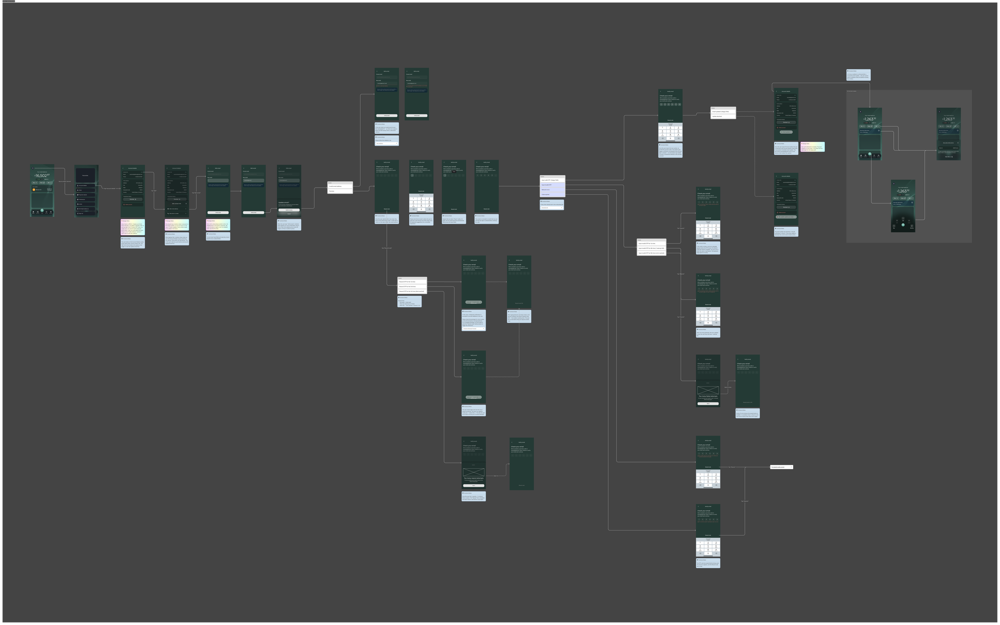
Design Process — A selection of key design decisions that shaped the flow.
Scalable Entry Point Design
To support both the email and phone update flows, I introduced a tappable "Edit" button at the top-right of the "Contact Info" card — creating a single, consistent entry point for both flows. This approach was designed with scalability in mind: the same pattern can be extended to the "Profile Address" section in the future, keeping the Settings experience unified and predictable as the product grows.
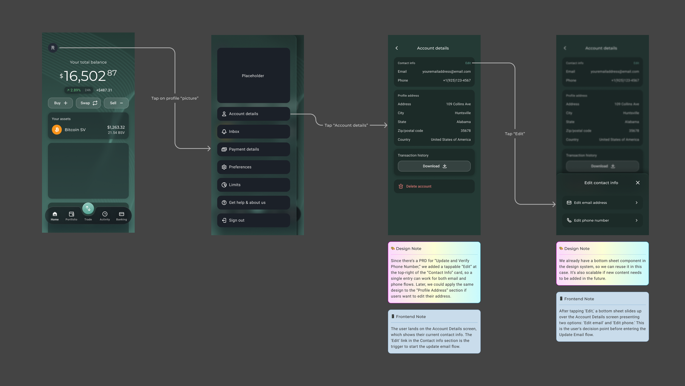
Leveraging the Design System
The bottom sheet component already existed in the design system, making it a natural choice for this flow. Reusing it ensured visual and interaction consistency across the app, while keeping the implementation efficient for the development team. It's also scalable — new content or options can be added in the future without requiring a new pattern.
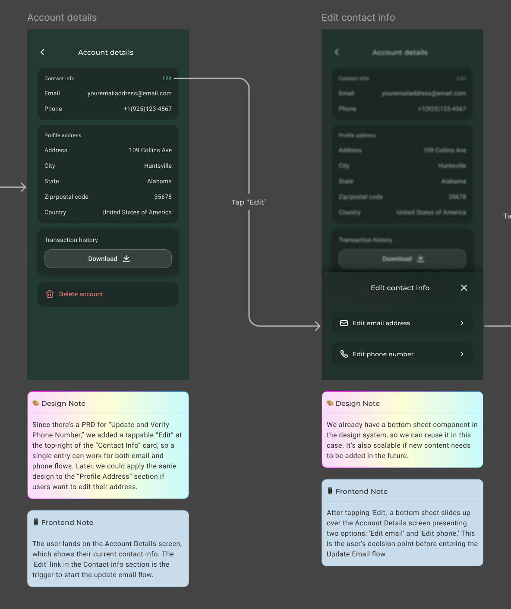
Communicating the 24-Hour Cooldown
For compliance reasons, a 24-hour cooldown is enforced after a successful email update — users cannot send or withdraw funds off-platform during this window.
To ensure users are never caught off guard, I added two layers of communication: an inline notification visible on the email update screen, and a bottom sheet that appears when the user taps "Verify Email" — acting as a pre-confirmation step before they commit. This way, users understand the restriction upfront and can plan around it before tapping "Update Anyway."
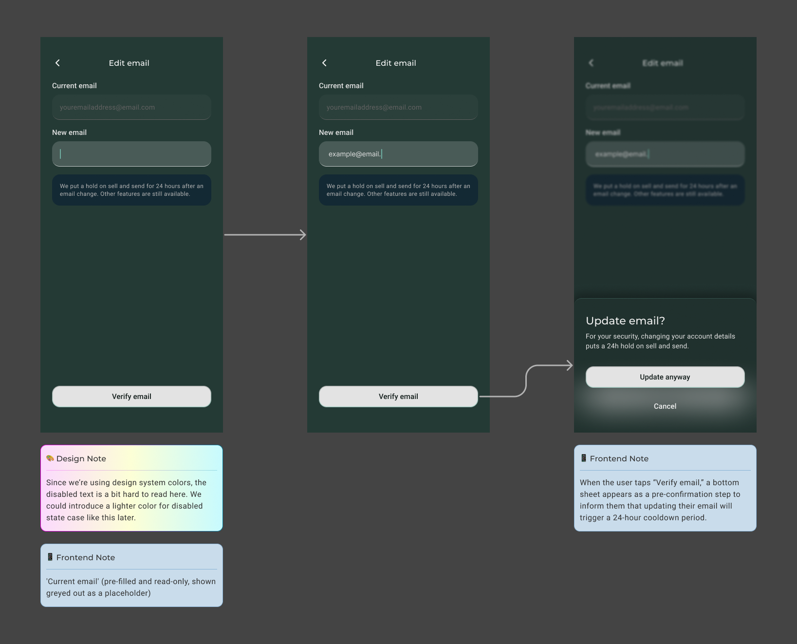
A Note on the Design System
While working through the flow, I noticed that the existing disabled state text was difficult to read — the contrast was insufficient for comfortable legibility. Rather than blocking the flow's progress, I flagged this as a design system improvement to address later: introducing a lighter, more legible color treatment for disabled states across the product. The flow remained the priority, but this observation was noted for future iteration.
Maintaining Consistency with Onboarding Patterns
Three key decisions were made to ensure consistency across the product:
- Input validation rules — when an invalid email address is entered, the same input validation rules and error patterns defined during onboarding are applied, keeping the experience familiar and predictable for users
- Server-side validation — since email addresses are validated on the backend, the same flow pattern developed during onboarding was followed, ensuring a consistent experience across both contexts
- Resend OTP limit — the resend limit follows the same rules established during onboarding: 1 initial send, up to 3 resends, and a 1-hour lockout once the limit is reached — keeping security behaviour consistent across all verification flows in the app
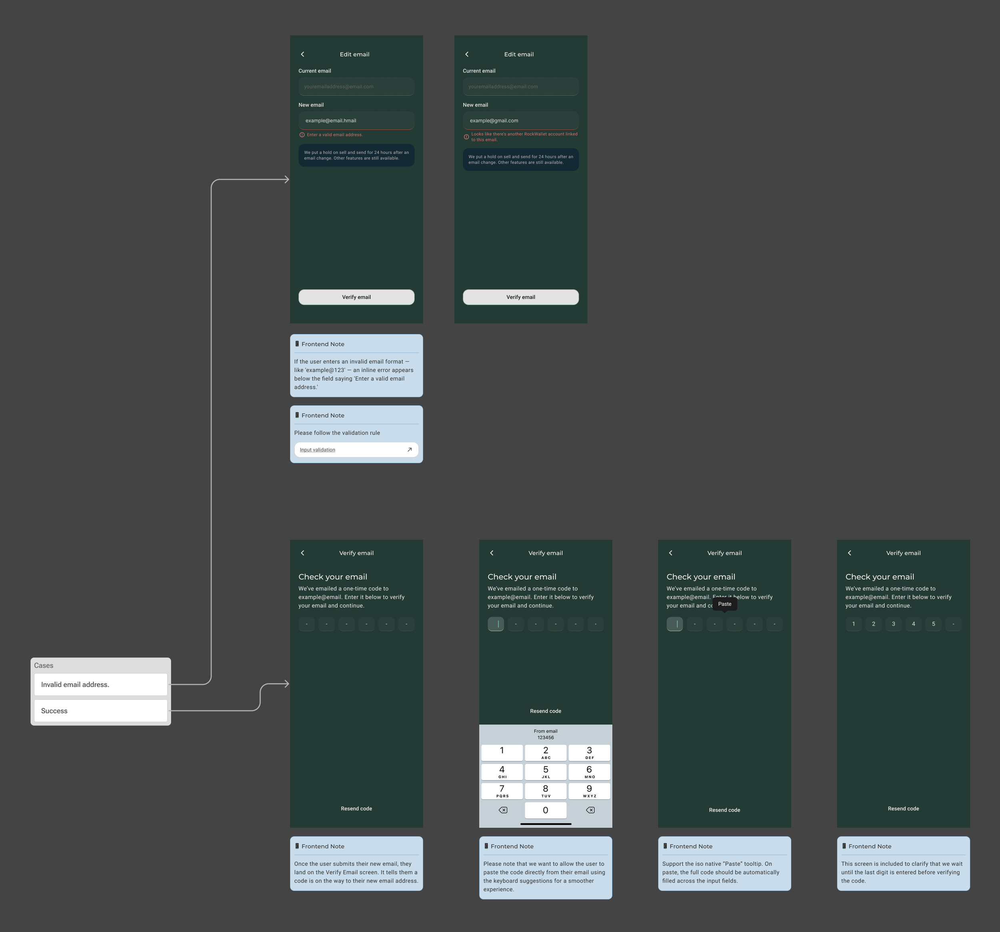
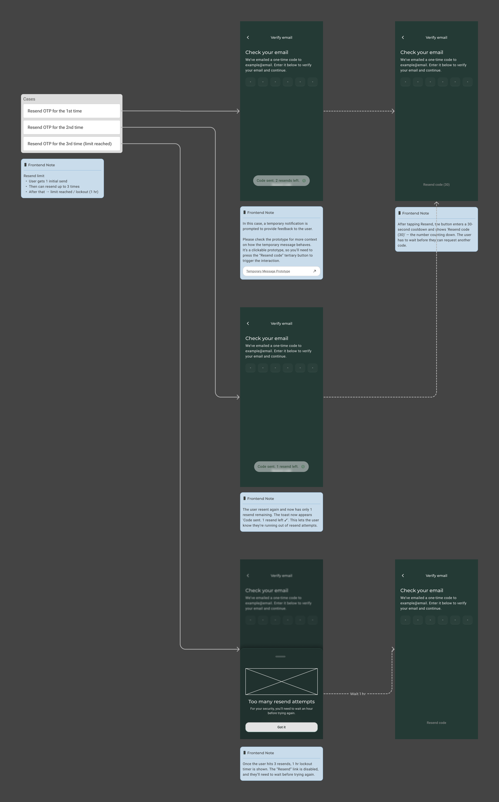
Defining Edge Cases
Beyond the happy path, three key edge cases were identified and designed for to ensure the flow remained robust and user-friendly under unexpected conditions: an invalid OTP entry, a network error during verification, and an expired code. Each case was accounted for with clear feedback and recovery options, so users always knew what went wrong and how to proceed.
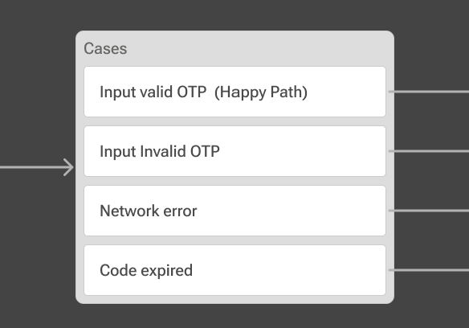
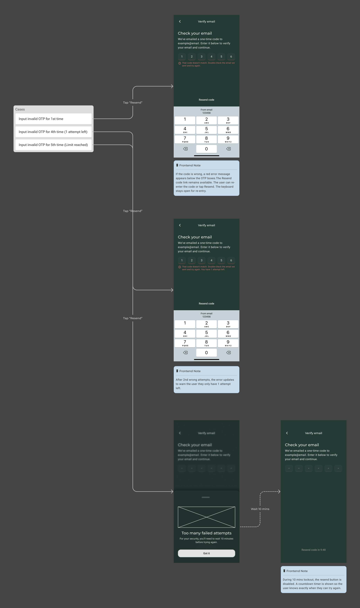
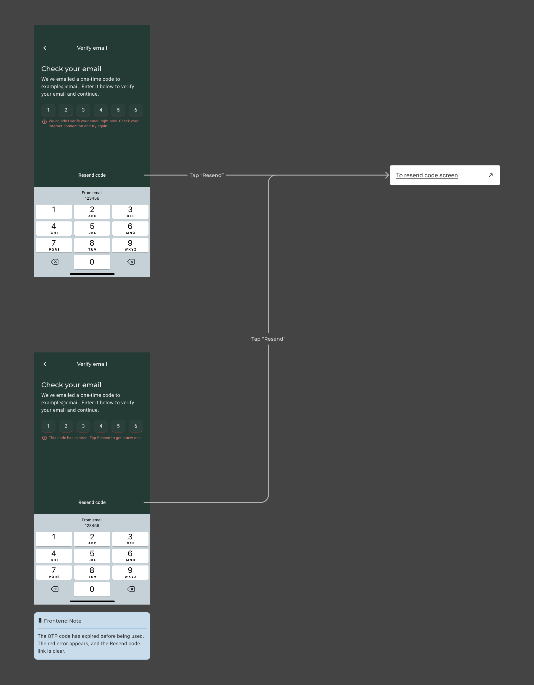
Compliance Requirement — 24-Hour Cooldown
A 24-hour cooldown is a compliance requirement enforced after a successful email update — during this window, users are restricted from sending or withdrawing funds off-platform. As a designer, it was important to balance this business and compliance requirement with a clear, honest user experience. Rather than surfacing the restriction only after the fact, the design proactively communicates the cooldown at two touchpoints — an inline notification and a pre-confirmation bottom sheet — so users can make an informed decision before committing to the update.
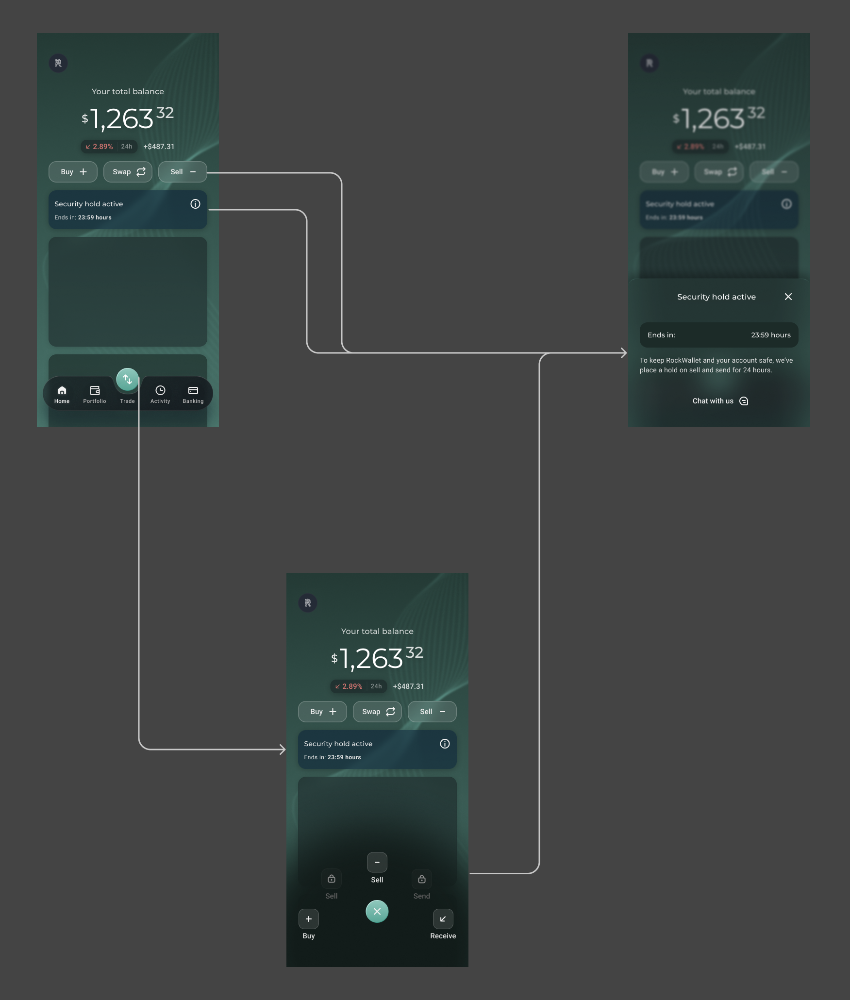
Outcomes
The email update and verification flow replaced a fragmented, support-dependent process with a secure, self-serve experience — one that respects both user autonomy and compliance requirements. Every design decision, from the scalable entry point to the layered cooldown communication and consistent OTP patterns, was made with the goal of giving users confidence and clarity at every step.
This flow laid a solid foundation for future Settings features, including phone number and address updates, establishing a consistent pattern that can be extended as the product continues to grow.
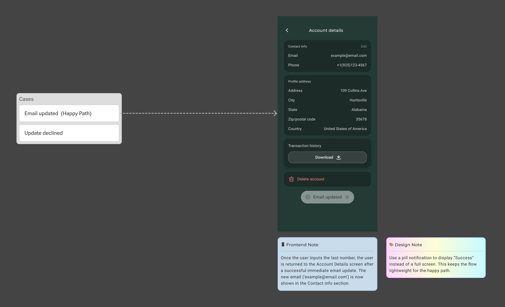
Settings — Update and Verify Phone Number
Overview
RockWallet 2.0 required a self-serve phone number update flow within Account Settings. Previously, phone number changes were not self-serve — users had to contact support, navigate a manual workaround involving a secondary account and a deliberate verification failure, and wait for Compliance to complete a KYC merge.
The goal was to replace this process with a simple, native experience allowing users to independently update their phone number from Account Settings — primarily to give Customer Support a reliable contact channel beyond email.
Phone number collection and verification is handled via the Sumsub SDK, a non-native implementation that manages country code selection, format validation, and verification — reducing the custom build requirement on our end.
The Problem
RockWallet 1.0 was not designed with self-serve account management in mind — phone number updates were never a native feature.
- Users had no way to update their phone number independently
- Every change was fully gated by Customer Support and Compliance, requiring a manual workaround and a KYC merge
- This created friction for users at high-intent moments and consumed Compliance capacity on requests that were low-risk and high-frequency
Research
Since this was a Settings feature rather than a new product concept, research focused on how competitors and other fintech and crypto platforms handle phone number update and verification flows. Existing patterns were reviewed and adapted to fit RockWallet's specific business and compliance requirements.
A critical part of the research was understanding how Sumsub — the third-party SDK handling phone verification — operates, and designing the flow around its constraints. Unlike the email update flow, which was built entirely in-house, the phone verification flow required designing around an external SDK — meaning certain screens and interactions were owned by Sumsub, not RockWallet. This fundamentally shaped the design approach and scope.
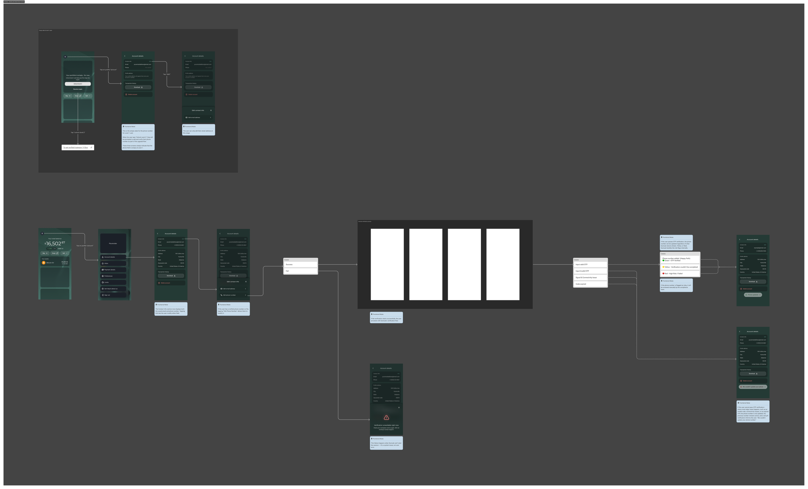
Design Process — A selection of key design decisions that shaped the flow.
Handling Empty State — Level 1
Since phone number is not mandatory during onboarding, the design had to carefully account for users who had never added one. Users are defined by two verification levels: Level 1 (unverified) and Level 2 (verified). Only Level 2 users are permitted to make account changes — a business and compliance requirement.
For Level 1 users, an empty state was designed to handle the case where no phone number exists on the account. When a Level 1 user taps "Unlock Level 2," they are prompted to add and verify their phone number as part of the upgrade flow — turning the empty state into a natural entry point for verification rather than a dead end.
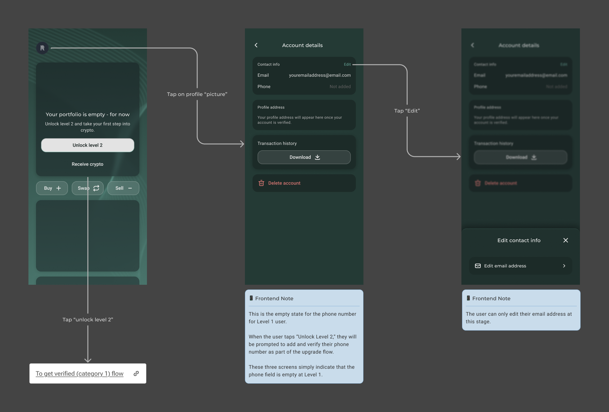
Sumsub Verification Flow
The Sumsub verification flow works in two distinct layers:
- Layer 1 — OTP Verification (user-facing): The user completes OTP verification inside the Sumsub SDK overlay. RockWallet does not build this screen — the SDK handles it entirely, including retry logic for incorrect codes
- Layer 2 — Risk Assessment (silent, backend only): After OTP is confirmed, Sumsub silently assesses the phone number's risk profile and returns one of three results — trusted, could not fully assess, or high risk. Regardless of the result, if OTP passes, the phone number is updated and displayed as verified. The risk assessment is a backend signal only and never surfaces in the app
From a UI perspective, there is one user-facing outcome: OTP passes → phone number updated and verified. This informed the design decision to keep the flow simple and linear.
Once a user passes OTP verification via Sumsub, the phone number is updated regardless of the risk assessment result — whether Sumsub returns Green, Yellow, or Red. Risk flags are handled internally by Sumsub and reviewed manually by the Compliance team when needed. This is a deliberate business and compliance decision, and as a designer, it was important to reflect this accurately in the flow — the user always sees a successful outcome if OTP passes.
However, if OTP verification fails, the phone number cannot be added or updated. Three edge cases were identified and designed for:
- Invalid OTP — incorrect code entered by the user
- Connectivity or signal issue — interruption during the verification process
- Expired OTP — code timed out before the user could complete verification
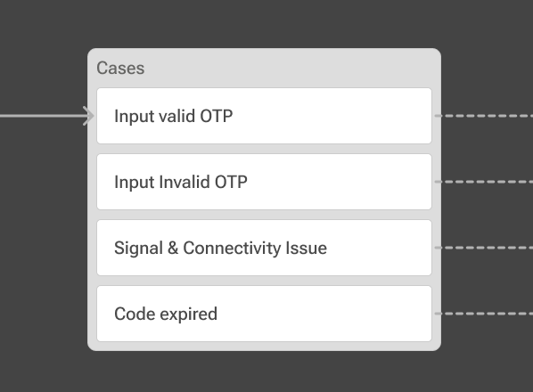
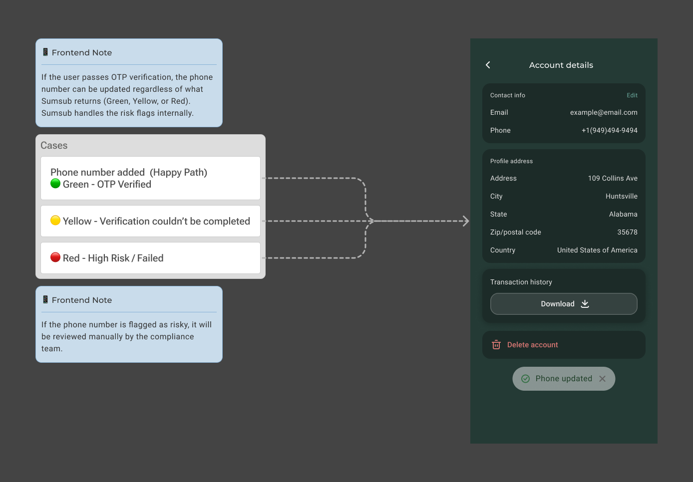
Outcomes
The phone number update flow successfully replaced a fully support-gated process with a self-serve, native experience — reducing friction for users and freeing up Compliance capacity from a class of requests that were low-risk and high-frequency. By designing around the Sumsub SDK constraints and accounting for all edge cases, the flow delivered a simple, linear user experience while meeting RockWallet's business and compliance requirements. It also established a consistent pattern alongside the email update flow, setting the foundation for a unified self-serve account management experience within Settings.
Settings — Update Address
Overview
The address update flow completes the self-serve account management trilogy alongside email and phone — replacing a manual Customer Support touchpoint with a simple, native Settings experience.
Address is distinct from email and phone in one important way: it is a self-reported field that drives geolocation logic. When a user updates their address, the backend re-evaluates their jurisdiction category, which controls their feature access within the app. No KYC verification is required, but the jurisdiction re-evaluation runs silently in the background.
The goal was a low-friction field update consistent with the patterns already established in the email and phone flows — simple on the surface, with the right logic running behind the scenes.
The Problem
RockWallet 1.0 was not designed with self-serve account management in mind — address updates were never a native feature.
- Users who moved or had an incorrect address on file had no way to fix it independently
- Every change required contacting support and waiting for a manual L2 correction — creating friction for a routine update
- A stale address record carries downstream risk: the jurisdiction category tied to the address controls the user's feature access within the app, meaning an outdated address could silently affect what a user can and cannot do
Research
Since the address update flow is the third in a series of self-serve account management features — following email and phone — much of the foundational research had already been established. The focus shifted to understanding what makes address distinct from the other two fields, and what that means for the design.
The key insight from the Research Review was that address is a self-reported field tied to geolocation logic. Unlike email and phone, updating an address triggers a silent jurisdiction re-evaluation in the backend — which can directly affect a user's feature access. This shaped the core design challenge: how do you communicate potential downstream impact to a user without creating unnecessary friction or alarming them unnecessarily?
Several key decisions were confirmed through the discovery and research process:
- No KYC verification required — address is self-reported, so no document collection or identity verification is needed on update
- Jurisdiction re-evaluation is instantaneous — no pending state or access restriction during the update itself
- Sumsub handles address validation — the mobile SDK already integrated is reused for address input and data sync, keeping the implementation consistent with the phone flow
- Category 6 (prohibited country) reuses the existing account-disabled flow — no new pattern required
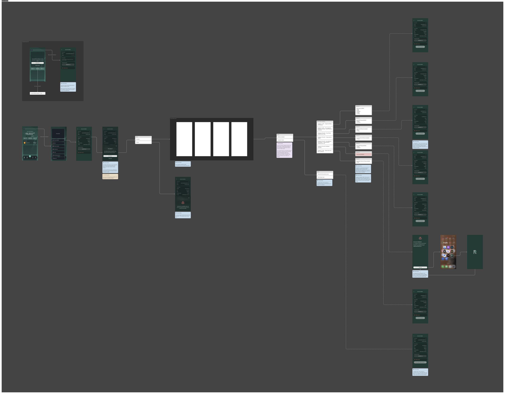
Design Process — A selection of key design decisions that shaped the flow.
Handling Empty State — Level 1
Since address is not mandatory during onboarding, the design had to carefully account for users who had never added one. For Level 1 users, an empty state was designed to handle the case where no address exists on the account. When a Level 1 user taps "Unlock Level 2," they are prompted to add and verify their address as part of the upgrade flow — turning the empty state into a natural entry point for verification rather than a dead end.
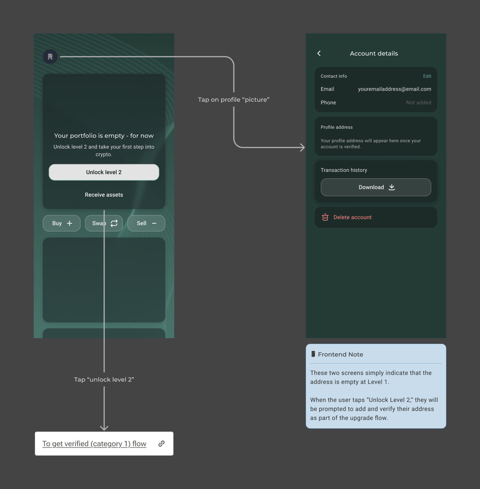
Pre-Confirmation Bottom Sheet
Before entering the address update flow, a bottom sheet appears as a pre-confirmation step — informing users that updating their address may affect their access to certain services within the app. This is a compliance and business requirement: since address drives jurisdiction logic, users need to understand the potential downstream impact before committing to the change.
A "Learn more" link is included, directing users to documentation explaining which features are available by country or region — giving users the context they need to make an informed decision without interrupting the flow itself.
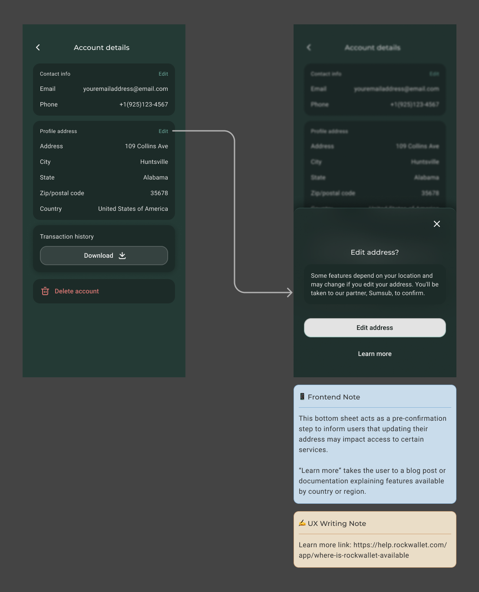
Post-Submission: Sumsub Validation & Jurisdiction Re-evaluation
Once the user submits their new address, Sumsub validates that the address is real and properly formatted, then syncs the data and returns either a success or failure result. This is where Sumsub's role ends — it handles address validation and data sync only, not jurisdiction logic.
The jurisdiction re-evaluation is entirely owned by RockWallet. Once Sumsub returns a successful result and the address is saved to the user record, the backend independently maps the address into one of seven geolocation categories — each defining what features the user can access within the app. These categories are business-defined, not Sumsub-defined.
If validation fails — due to a network issue, connectivity problem, or other edge case — the address is not updated and the user is informed with a clear error state and a path to retry.
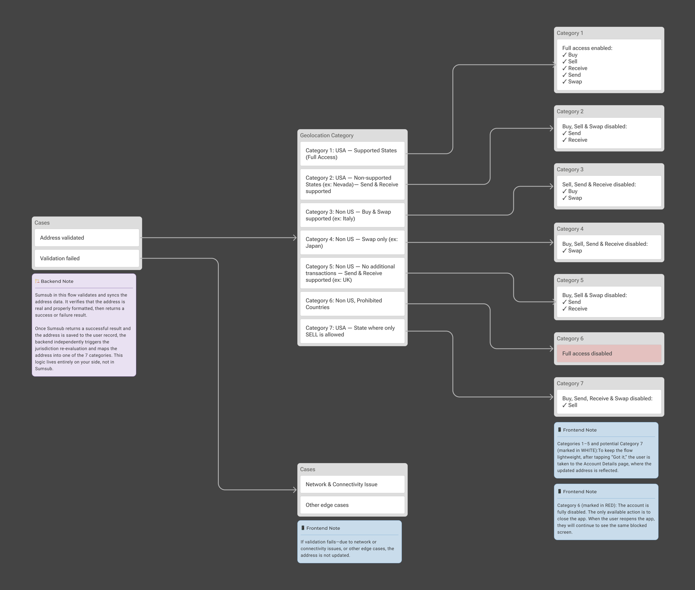
Category 6 — Account Disabled
If the submitted address maps to a Category 6 prohibited country, the account is fully disabled — this is a compliance requirement. Rather than designing a new flow, this outcome reuses the existing account-disabled experience already established in the product, ensuring consistency and reducing build effort.
The only available action is to close the app. On reopening, the user remains on the same blocked screen — they cannot bypass or retry. If they believe this is a mistake, they are directed to contact support.
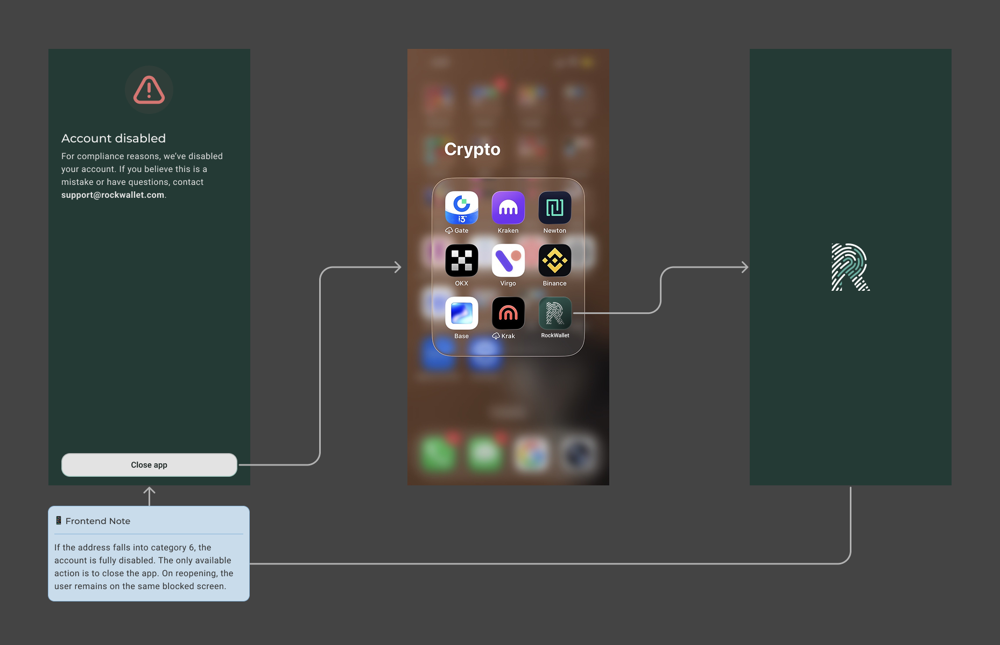
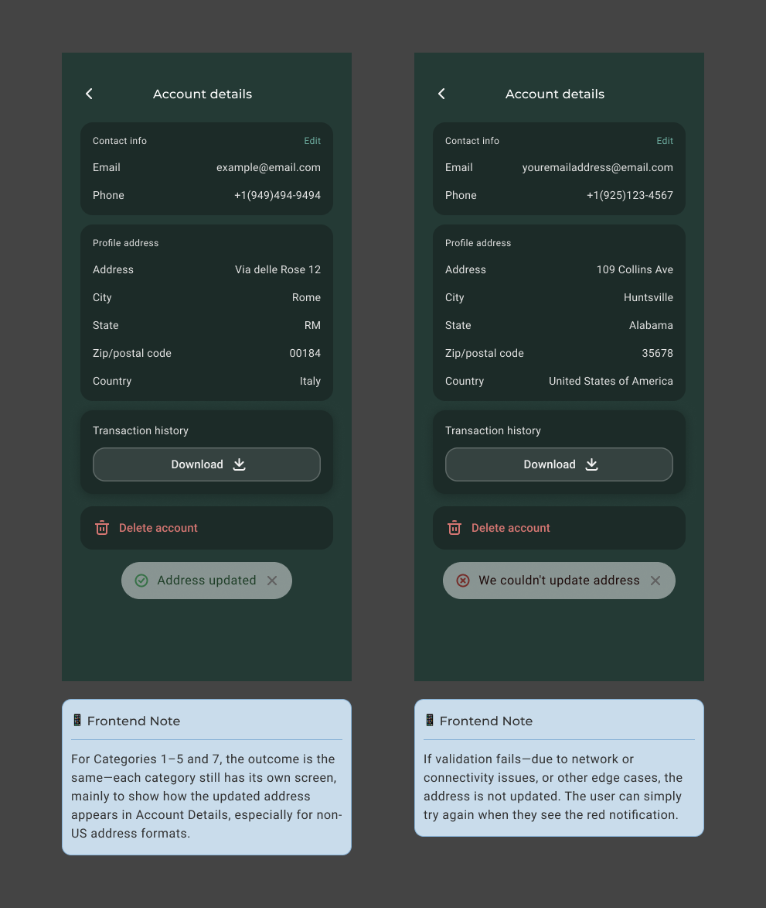
Outcomes
The address update flow completed the self-serve account management trilogy — alongside email and phone — replacing a manual, support-dependent process with a simple, native Settings experience. By designing around Sumsub's validation and data sync capabilities, and accounting for all seven geolocation categories and their downstream access implications, the flow delivered a clean, low-friction experience while meeting RockWallet's business and compliance requirements.
The most complex design challenge was communicating potential jurisdiction impact without creating unnecessary friction or alarming users — resolved through the pre-confirmation bottom sheet and clear post-submission states. The patterns established here are consistent with the email and phone flows, reinforcing a unified self-serve account management system that can scale to future account attribute changes.